Welcome to the documentation for Sable, a self-hosted VPN platform made of three projects: a Flutter VPN app for Android and iOS, a NestJS backend API with an agent for your VPN servers, and a Next.js admin panel. Follow this guide to set everything up, brand it and publish it.
sable-backend/node-agent/.A plain-language tour of what the app does, so you can find your way around before touching any code. Nothing in this section needs programming knowledge — the technical setup starts at section 1.
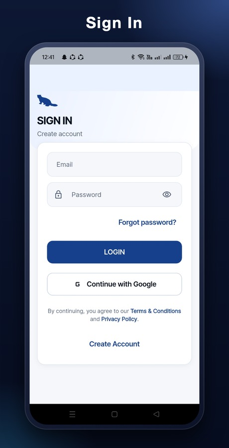
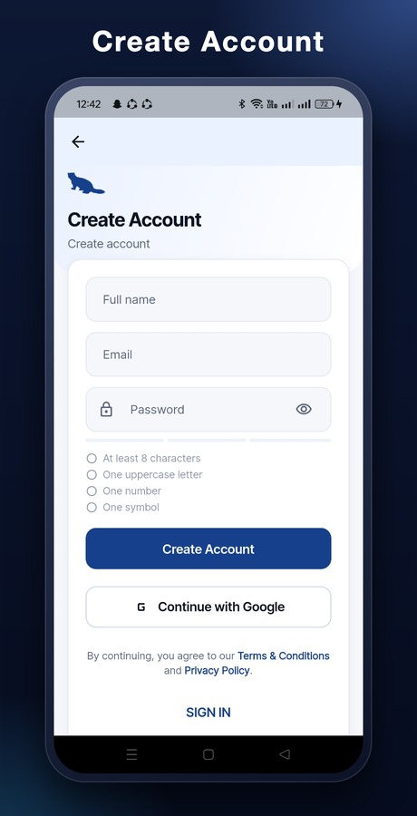
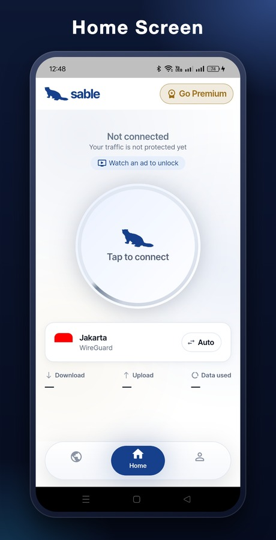
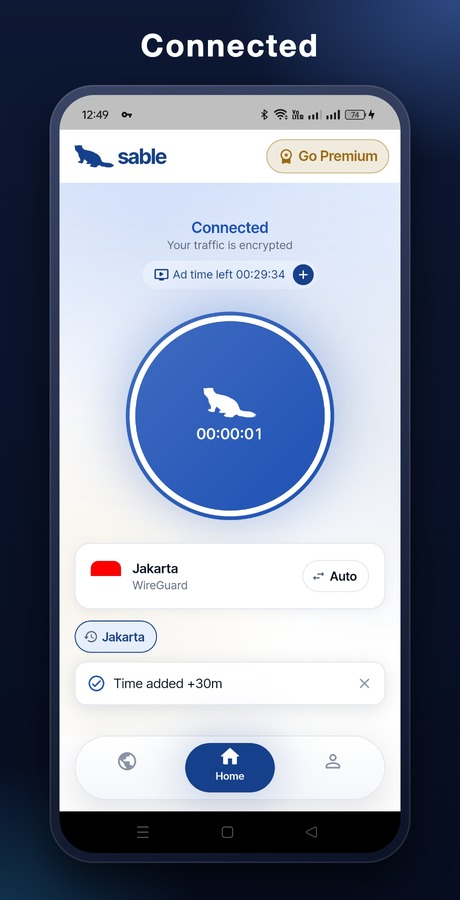
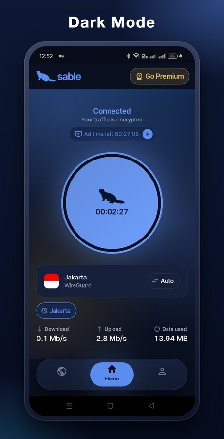
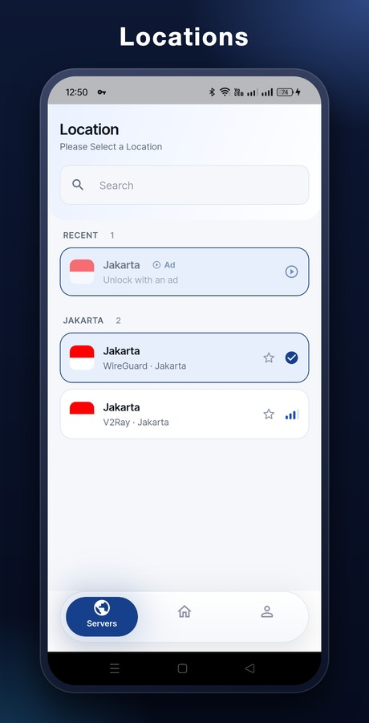
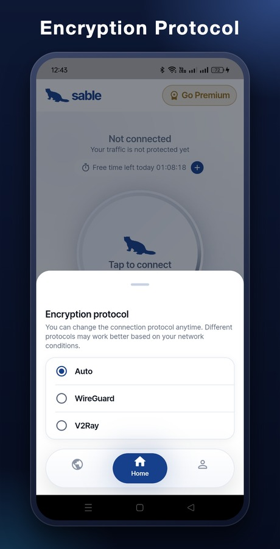
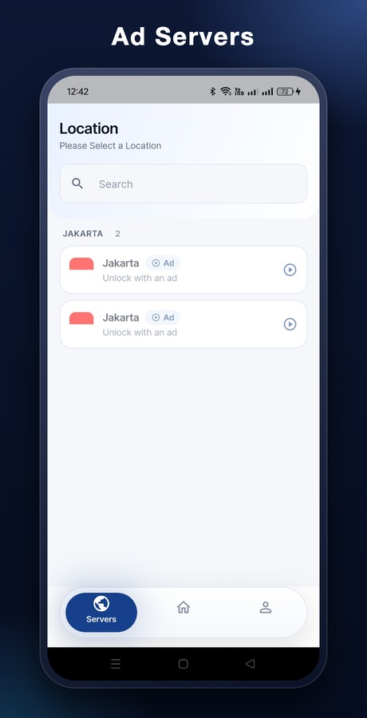
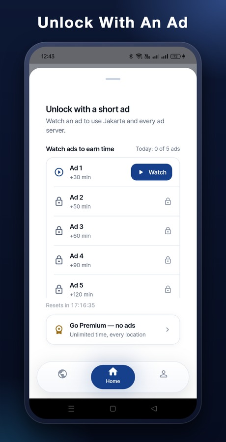
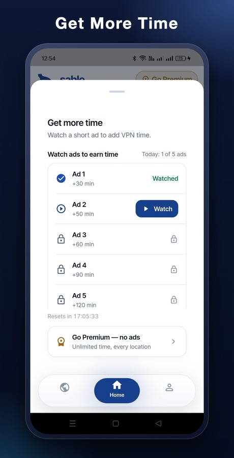
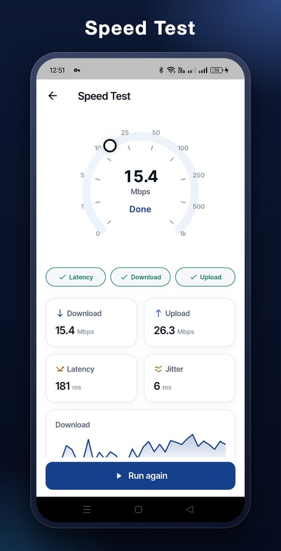
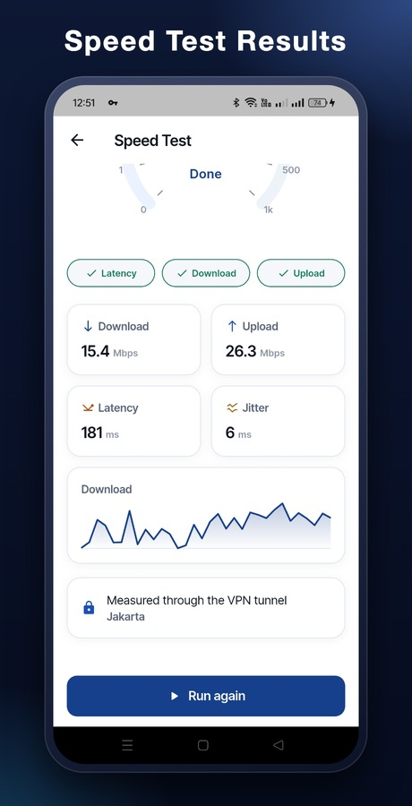
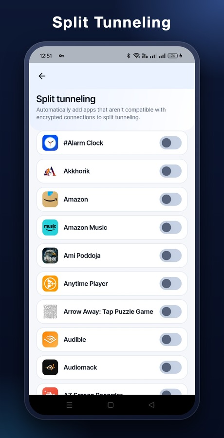
Current plan, change password, signed-in devices (sign any of them out), theme, language (English, Bangla, Arabic, Russian and Ukrainian), support messages, debug logs, legal pages, sign out and delete account.
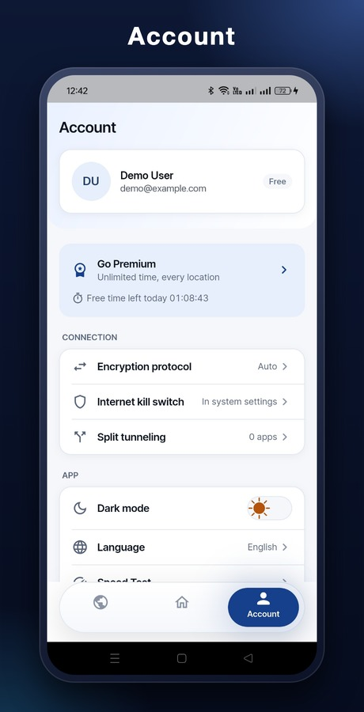
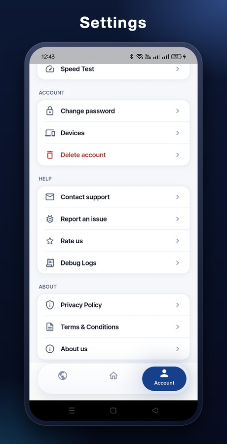
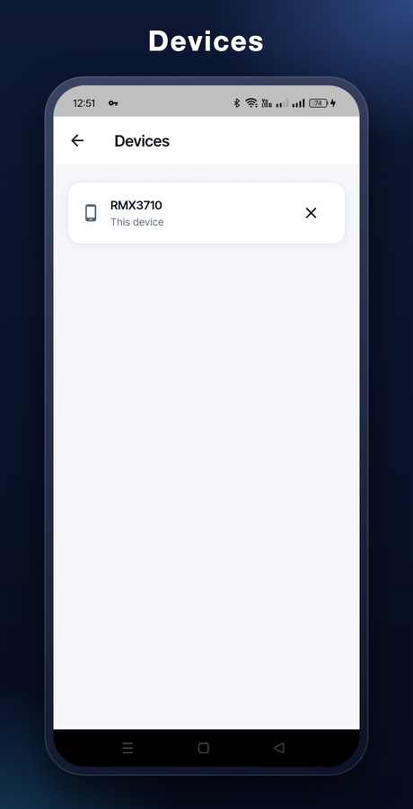
Almost everything users see is managed in the browser, without rebuilding the app: VPN servers and regions, plans and store products, promo codes, rewarded-ad rules, announcements, push notifications, minimum app version and maintenance mode, the privacy policy, terms and about pages, app users, support messages and integration keys. The full list is in section 14.
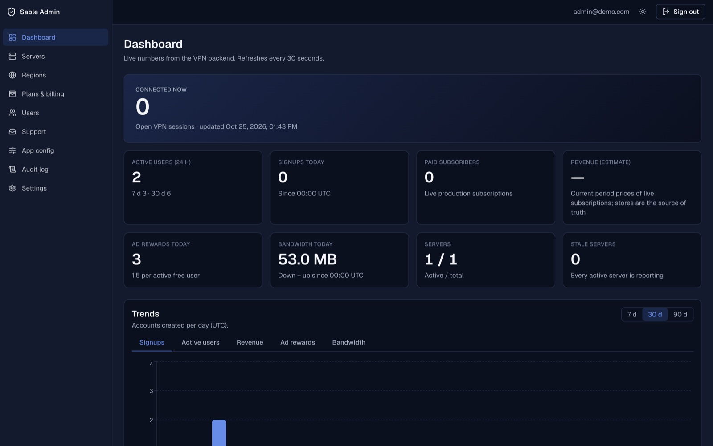
Sable is self-hosted: you receive the full source code, with no licence keys and nothing payable to us. Some features connect to outside services that are not included in the purchase.
firebase_core, firebase_auth, firebase_messaging, firebase_analytics, firebase_crashlytics in the app, firebase-admin in the backend). You accept Google's Firebase Terms of Service and pay any usage beyond the free tier (section 4).| Service | Required? | Used for | Who bills you |
|---|---|---|---|
| VPS or cloud server | Required | Runs the backend (Node.js 24, PostgreSQL 14+) and the admin panel | Your hosting provider |
| VPN servers (Ubuntu or Debian) | Required | Carry your users' VPN traffic. One or more per location; each runs WireGuard, Xray (V2Ray) and the node agent. Watch the bandwidth allowance of each server | Your hosting provider |
| SMTP email | Required for email sign-up | One-time codes for sign-up and password reset | Your email provider, beyond its free tier |
| Google Play Developer account | Required for Android | Publishing the app; USD 25 one-time | |
| Apple Developer Program | Required for iOS | Publishing the app, and the Network Extension capability for the VPN tunnel; USD 99 per year | Apple |
| Firebase (your own project) | Optional | Google sign-in, push notifications, Analytics, Crashlytics. Without it, email sign-in still works and these features are off | Google, beyond the free tier |
| RevenueCat | Optional | Premium subscriptions: manages Google Play and App Store purchases and calls your backend's webhook | RevenueCat: free tier, then a share of tracked revenue |
| Google Play Billing | Optional (through RevenueCat) | Premium on Android. Google takes a commission on each sale, typically 15–30% | Google (deducted from sales) |
| Apple In-App Purchase | Optional (through RevenueCat) | Premium on iOS. Apple takes a commission on each sale, typically 15–30% | Apple (deducted from sales) |
| bKash and Nagad | Not integrated | The database contains switched-off placeholder rows for these two gateways, but no checkout is included. They stay off; enabling them needs your own development work | — |
| Stripe, PayPal and other gateways | Not integrated | No checkout integration ships for these | — |
| Google AdMob (your own account) | Optional | Rewarded and interstitial ads. You must follow AdMob's policies (section 10) | Free to join; you are responsible for policy compliance and any costs related to your account or traffic |
| Cloudflare R2 | Optional | Images uploaded from the admin panel | Cloudflare, beyond the free tier |
| Microsoft Clarity | Optional | Session analytics in the app; off until you set a project ID | Free |
| Axiom | Optional | Remote app logs; off until you set a token | Axiom, beyond the free tier |
| Cloudflare speed test endpoints | Used by default | The in-app speed test downloads from and uploads to speed.cloudflare.com. You can point it to your own server (section 8) | Free public service |
Sable is three projects plus one small agent on every VPN server. Only the backend talks to the database and holds secrets. The app never sees another user's data, and the admin panel never talks to PostgreSQL directly.
| Connection | What happens |
|---|---|
| App → Backend | Every request goes to https://api.your-domain.com/api/v1/... with the user's Sable access token in Authorization: Bearer and device headers (X-Device-Id, X-Platform, X-App-Version). Access tokens last 15 minutes and are renewed with a refresh token. |
| App → Firebase → Backend | For Google sign-in, Firebase returns an ID token. The app sends it to POST /auth/social; the backend checks it with the Firebase Admin SDK and returns Sable tokens. Email sign-in does not use Firebase. |
| App → Backend → VPN server | When the user taps Connect, the backend picks a server, creates a WireGuard peer or a V2Ray user for that session and returns the tunnel settings. The app then connects straight to the VPN server. VPN traffic never passes through the backend. |
| VPN server (node agent) → Backend | The agent on each server sends health and load every 30 seconds and applies new or removed peers every 5 seconds. It signs in with the agent token from the install command. |
| Admin panel → Backend | The admin signs in with the email and password set in the backend .env. The panel keeps the admin token in an httpOnly cookie and forwards each browser request to /api/v1/admin/... from its own server, so the browser never talks to the API directly and no CORS setup is needed. |
| Backend → PostgreSQL | All data lives here. Only the backend connects. |
| Backend → SMTP, R2 | One-time codes for sign-up and password reset are sent by email through your SMTP account. Images uploaded in the admin panel (region flags, push images) go to Cloudflare R2. |
| Backend → Firebase Cloud Messaging | Push notifications written in the admin panel are sent by the backend. |
| App ↔ RevenueCat → Backend | The app buys a subscription through Google Play or the App Store with the RevenueCat SDK. RevenueCat then calls the backend's webhook, and the backend grants or removes Premium. |
| App ↔ AdMob → Backend | A free user watches a rewarded ad. AdMob calls the backend's server-side verification URL, and only then does the backend add VPN time. |
Use these versions for the smoothest build. The project was built and tested with the versions marked "tested".
.fvmrc)You need two kinds of server: one for the backend and admin panel, and one or more for VPN traffic.
| Server | CPU | RAM | Disk | Notes |
|---|---|---|---|---|
| Backend + admin panel, minimum | 1 vCPU | 2 GB (plus 2 GB swap) | 20 GB SSD | Testing and a small user base |
| Backend + admin panel, recommended | 2 vCPU | 4 GB | 40 GB SSD | Launch and thousands of users. Consider a managed PostgreSQL as you grow |
| Each VPN server | 1 vCPU or more | 1 GB or more | 10 GB+ | Ubuntu 22.04 / 24.04 or Debian 12, a public IPv4 and generous bandwidth. Capacity depends mostly on network speed and bandwidth allowance, not CPU |
Building the admin panel (npm run build) needs about 1.5 GB of free RAM; on a 2 GB server add swap first. Shared hosting (cPanel without SSH and Node.js) is not enough; you need VPS or cloud servers with root SSH access.
arm64-v8a, armeabi-v7a), so it does not run on x86 Android emulators. The rest of the app opens in emulators, but Connect needs a phone.
Select your operating system to see the setup steps.
C:\flutter.C:\flutter\bin to the Path environment variable (This PC > Properties > Advanced system settings > Environment Variables).flutter doctor. Fix anything it reports.tar xf flutter_macos_<version>.tar.xzflutter/bin to your PATH in ~/.zshrc, then open a new terminal and run flutter doctor.sudo xcodebuild -runFirstLaunch.sudo gem install cocoapods (or brew install cocoapods).tar -xvzf android-studio-*-linux.tar.gz) and run bin/studio.sh.tar xf flutter_linux_<version>.tar.xzflutter/bin to your PATH, then run flutter doctor.cd sable-vpn
flutter pub get
flutter run # on a connected real deviceBefore the app can sign in and connect, point it at your backend (section 8). There is no code generation step: translations and models are plain Dart files.
To check the project builds cleanly:
flutter analyze
flutter testEvery app needs a unique identifier, for example com.yourcompany.vpn. The defaults are com.sablevpn.app (Android and iOS), com.sablevpn.app.VpnTunnel (the iOS tunnel extension) and the App Group group.com.sablevpn.app. Change them before you set up Firebase, because Firebase apps are registered by this identifier.
| File | Change |
|---|---|
android/app/build.gradle | namespace and applicationId (currently com.sablevpn.app) |
android/app/src/main/kotlin/com/sablevpn/app/ | The package line at the top of every .kt file in this folder and its widget/ and vpn_controller/ subfolders. You may also move the files into folders that match the new package (optional) |
android/app/src/main/AndroidManifest.xml | The widget actions com.sablevpn.app.widget.ACTION_CONNECT and ACTION_DISCONNECT. Keep them identical to the constants in widget/WidgetActionBroadcastReceiver.kt |
The change_app_package_name tool in dev_dependencies can do most of the Android part: dart run change_app_package_name:main com.yourcompany.vpn. Check the widget actions afterwards.
The VPN plugin in packages/flutter_vpncore has its own ID, com.sablevpn.core. It is internal and does not need to change.
Open ios/Runner.xcworkspace in Xcode and change the Bundle Identifier on Signing & Capabilities for both targets:
com.yourcompany.vpn.VpnTunnel, for example com.yourcompany.vpn.VpnTunnelThen update the same values in code. The app and the tunnel extension share data through the App Group, and the app starts the tunnel by its bundle ID. If any of these values differ, the app still builds but Connect fails on the device:
| Value | Where to change it |
|---|---|
App Group group.com.sablevpn.app | ios/Runner/Runner.entitlementsios/VpnTunnel/VpnTunnel.entitlementsios/VpnTunnel/VpnCoreShared.swift (appGroup)ios/Runner/AppDelegate.swift (sharedAppGroup)packages/flutter_vpncore/ios/Classes/FlutterVpnCorePlugin.swift (appGroup)lib/app/bootstrap.dart |
Tunnel bundle ID com.sablevpn.app.VpnTunnel | ios/VpnTunnel/VpnCoreShared.swift (tunnelBundleIdentifier)packages/flutter_vpncore/ios/Classes/FlutterVpnCorePlugin.swift |
Use group. followed by your Runner bundle ID as the new App Group, and register it in your Apple Developer account (section 12).
pubspec.yaml (sable) is internal and never shown to users. Leave it as is; renaming it means updating every package:sable/ import.
Firebase provides Google sign-in, push notifications, Analytics and Crashlytics. It is optional: without it the app runs with email sign-in, and the Google button, push, Analytics and Crashlytics are switched off automatically.
YOUR_FIREBASE_.... They let the project compile, but Firebase features stay off until you replace them:
sable-vpn/lib/firebase_options.dartsable-vpn/android/app/google-services.jsonsable-vpn/firebase.json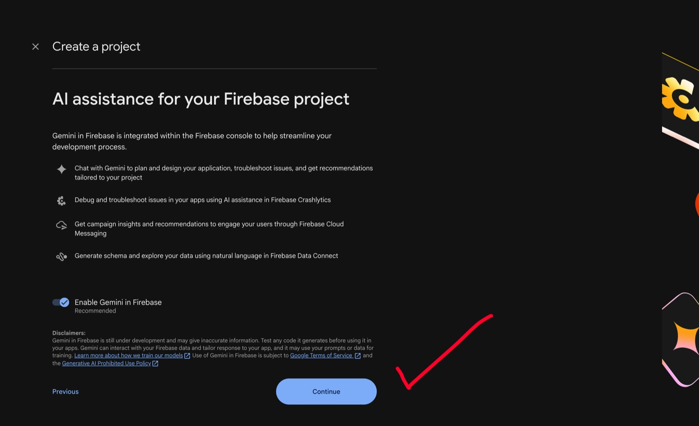
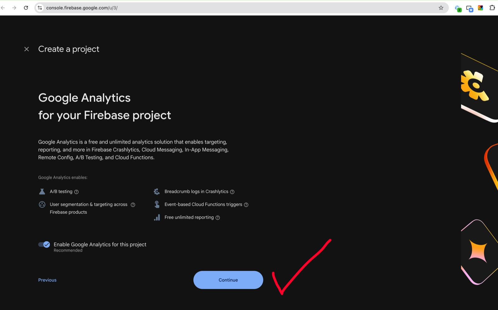
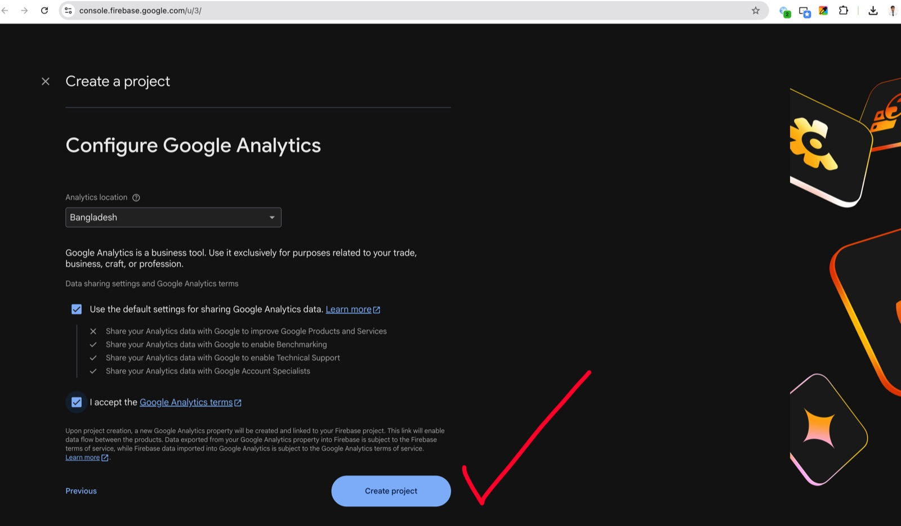
Change the package name and bundle ID first (section 3). The FlutterFire CLI then registers your Android and iOS apps and writes the config files:
npm install -g firebase-tools
firebase login
dart pub global activate flutterfire_cli
cd sable-vpn
flutterfire configure --project=<your-firebase-project-id>Select android and ios and confirm your IDs. The command updates lib/firebase_options.dart, android/app/google-services.json, ios/Runner/GoogleService-Info.plist and firebase.json. The Android build turns on the Firebase and Crashlytics Gradle plugins by itself once google-services.json no longer contains placeholders.
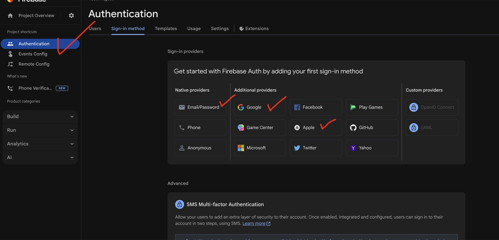
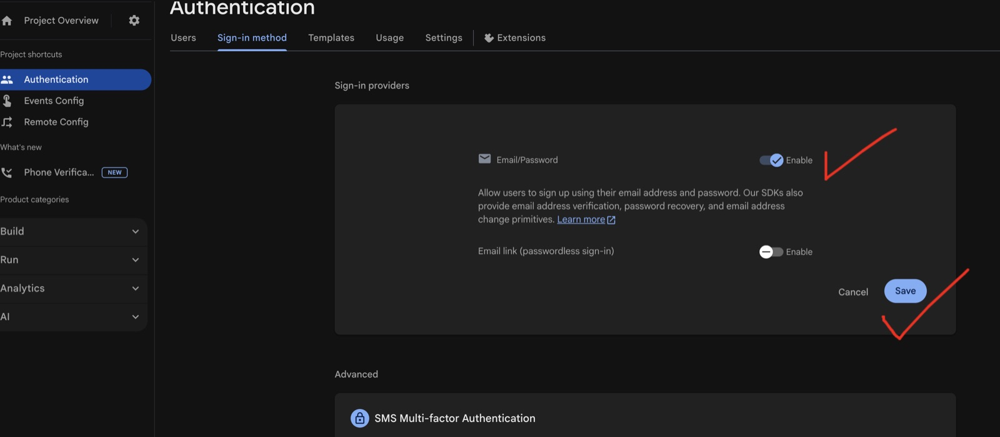
The backend checks Google sign-ins and sends push notifications with a Firebase service account: Project settings > Service accounts > Generate new private key. Paste the JSON in the admin panel (Settings > Integrations) or put it in the backend .env (section 13, step 7).
| Where | File | Key |
|---|---|---|
| Android launcher name | android/app/src/main/AndroidManifest.xml | android:label="Sable" |
| iOS home-screen name | ios/Runner/Info.plist | CFBundleDisplayName, CFBundleName |
| iOS build settings (Runner and VpnTunnel) | Xcode > target > Build Settings | INFOPLIST_KEY_CFBundleDisplayName |
| Name in iOS Settings > VPN | packages/flutter_vpncore/ios/Classes/FlutterVpnCorePlugin.swift | localizedDescription = "Sable" |
| Android VPN notification | packages/flutter_vpncore/android/src/main/kotlin/com/sablevpn/core/ (ServiceNotification.kt, VpnCoreService.kt) | search for Sable |
| Android home-screen widget | android/app/src/main/kotlin/com/sablevpn/app/widget/ | search for Sable |
| App title and on-screen text | lib/app/app.dart (title), lib/design/brand/sable_wordmark.dart, lib/core/i18n/app_strings.dart | search for Sable / sable |
Tip: search lib/, android/app/src/, ios/ and packages/flutter_vpncore/ for Sable to find every user-visible occurrence.
All launcher icons, the notification icon and the splash image are generated from one picture, assets/brand/sable_silhouette.png:
assets/brand/sable_silhouette.png with your own logo (a PNG with a transparent background, the same pixel size as the original).flutter test tool/generate_brand_icons.dart. It writes the Android mipmap-* icons, launch_image.png and the ic_stat_sable_logo notification icons, and the iOS AppIcon.appiconset and LaunchImage.imageset.#16408C, set in android/app/src/main/res/values/colors.xml (splash_primary) and res/values/ic_launcher_background.xml. Change both to your brand colour before you generate.lib/design/brand/sable_boot_artwork.dart; the logo mark is lib/design/brand/sable_mark.dart.All app colours are in lib/design/tokens/sable_colors.dart, with a light set (SableColors.light) and a dark set (SableColors.dark). Flutter writes colours as 0xAARRGGBB: FF (fully opaque) followed by the normal hex code.
// lib/design/tokens/sable_colors.dart
// SableColors.light
primary: Color(0xFF16408C), // brand blue #16408C
connected: Color(0xFF1D50B5), // the connect dial when connected
// SableColors.dark
primary: Color(0xFF5B8DEF), // brand blue for dark mode #5B8DEF
connected: Color(0xFF6FA0FF),Example: to use orange #FF6B00, change the light primary to Color(0xFFFF6B00) and pick a lighter orange for dark mode, then stop the app and run it again (hot reload does not update const colours). Screens read colours only from this file; a test (test/design/tokens_test.dart) fails if a screen uses a hard-coded colour.
The app uses Inter Tight through the google_fonts package, which downloads the font the first time the app opens. On networks that block Google Fonts the app falls back to the system font. To ship the font inside the app instead, add the font files under flutter: fonts: in pubspec.yaml and change face in lib/design/tokens/sable_typography.dart to use fontFamily.
Set your backend address in lib/core/config/auth_api_config.dart:
// lib/core/config/auth_api_config.dart
static const String origin = String.fromEnvironment(
'AUTH_API_BASE_URL',
defaultValue: 'https://api.your-domain.com', // ← your backend, origin only
);Enter the origin only (no /api/v1); the app adds /api/v1/... itself. You can also leave the file alone and pass the address when you build: --dart-define=AUTH_API_BASE_URL=https://api.your-domain.com.
http://<your-computer-ip>:3001 on the same Wi-Fi). Put the backend behind HTTPS before you test a release build or an iPhone build.
All of these are optional. Pass them with --dart-define=NAME=value, or put them in a secrets.json file (ignored by Git) and build with --dart-define-from-file=secrets.json. A missing value turns that feature off.
| Name | Default | What it does |
|---|---|---|
AUTH_API_BASE_URL | https://your-domain.com | Backend origin (see above) |
REVENUECAT_ANDROID_KEY, REVENUECAT_IOS_KEY | empty | Fallback RevenueCat SDK keys. Normally you set them in the admin panel instead (section 11) |
CLARITY_PROJECT_ID | empty | Microsoft Clarity session analytics |
AXIOM_TOKEN | empty | Sends app logs to your Axiom dataset vpn_log |
SPEED_TEST_DOWNLOAD_URL, SPEED_TEST_UPLOAD_URL, SPEED_TEST_BYTES_PARAM | https://speed.cloudflare.com/__down, .../__up, bytes | Speed test targets. Point them to your own server if you prefer |
Everything else the app needs (plans, locations, ad units, RevenueCat keys, maintenance mode, minimum version, announcements, legal pages) comes from the backend at run time and is set in the admin panel.
The app ships with English, Bangla, Arabic, Russian and Ukrainian. Users pick a language on Account > Language; the app starts in English until they do.
All texts live in one Dart file, lib/core/i18n/app_strings.dart. The keys are in lib/core/i18n/string_keys.dart. Each key has one line per language:
// lib/core/i18n/app_strings.dart
StringKeys.profile: {
"en": "Profile",
"bn": "প্রোফাইল",
"ar": "ملف شخصي",
"ru": "Профиль",
"uk": "Профіль",
},To change a text, edit its line. A missing translation falls back to English for that key only.
Example: adding French (fr).
app_strings.dart, add 'fr' to AppStrings.supported, and add a case for 'fr' in _getLocal()."fr": "..." to every entry in localStrings in the same file:
StringKeys.profile: {
"en": "Profile",
...
"uk": "Профіль",
"fr": "Profil",
},lib/features/preferences/bloc/locale_cubit.dart, add an entry for French to languages (the code and the name shown in the picker, Français).lib/app/app.dart, add Locale('fr') to supportedLocales.Do the same steps in reverse: remove the code from AppStrings.supported, _getLocal(), LocaleCubit.languages and supportedLocales. The extra lines in localStrings can stay; they are simply not used.
English is the default in three places: languageCode = 'en' in app_strings.dart, and the starting value and fallback in locale_cubit.dart. Change all three to start in another language.
flutter_localizations package and set localizationsDelegates (with GlobalWidgetsLocalizations.delegate) on the MaterialApp in lib/app/app.dart. A few labels, such as the bottom tab names in lib/app/router/shell/app_shell_page.dart, are written in English directly in the code.
Free users watch rewarded ads to add VPN time or unlock Ads locations; you can also show banner and interstitial ads. The package contains only Google's official test IDs (publisher ca-app-pub-3940256099942544), so ads show "Test Ad" until you add your own. Debug builds always use test ads.
Create your app in AdMob and replace Google's sample app IDs:
| Platform | File | Value to replace |
|---|---|---|
| Android | android/app/build.gradle (admobAppId in defaultConfig and in the release block) | ca-app-pub-3940256099942544~3347511713 |
| Android | lib/core/config/admob_config.dart (liveAndroidAppId) | the same value as in build.gradle |
| iOS | ios/Flutter/Release.xcconfig and ios/Flutter/Debug.xcconfig (GAD_APPLICATION_IDENTIFIER) | ca-app-pub-3940256099942544~1458002511 |
Create a Rewarded ad unit (and optionally Banner and Interstitial units) for each platform. Then in the admin panel open Plans & billing > Rewarded ads and enter the unit IDs. Release builds use these values; no new app build is needed to change them. As a fallback you can also put your Android rewarded unit in liveAndroidRewardedUnitId in lib/core/config/admob_config.dart.
The backend adds time only after Google confirms the ad was watched. In AdMob, open your Rewarded ad unit > Server-side verification and set the callback URL to:
https://api.your-domain.com/api/v1/webhooks/admob-ssvThe app passes the user's ID and a one-time code with each ad; the backend checks Google's signature and the code before adding time. Optionally restrict which ad units may grant rewards with ADMOB_REWARDED_AD_UNIT_IDS in the backend .env or the ad unit list on the Rewarded ads page.
On Plans & billing > Rewarded ads you set: rewards on or off, the reward ladder (minutes per ad, by default 30, 50, 60, 90 and 120), rewards per day per user and per device (5), the wait between ads, the most time a user can bank (4 hours), banner on or off, interstitial on or off and how often (every 3 connects). The same page shows a log of every reward and why any was refused.
Set version: in pubspec.yaml (for example 1.0.1+3: version name 1.0.1, build number 3). Android and iOS both read it. Raise the build number for every upload. In Xcode, give the VpnTunnel target the same version and build as the app, or App Store Connect warns that the extension version does not match.
macOS / Linux:
keytool -genkey -v -keystore ~/upload-keystore.jks -keyalg RSA -keysize 2048 -validity 10000 -alias uploadWindows:
keytool -genkey -v -keystore %userprofile%\upload-keystore.jks -storetype JKS -keyalg RSA -keysize 2048 -validity 10000 -alias uploadCreate android/key.properties:
storePassword=<password from previous step>
keyPassword=<password from previous step>
keyAlias=upload
storeFile=<full path to upload-keystore.jks>android/app/build.gradle already reads this file. If it is missing, release builds are signed with the debug key so they still build — Google Play will not accept those.
flutter build apk --release # APK for direct install / testing
flutter build appbundle --release # App Bundle for Google PlayThe App Bundle is created at build/app/outputs/bundle/release/app-release.aab. Upload it in Play Console.
QUERY_ALL_PACKAGES permission and its own declaration. Before you submit, review the permissions in android/app/src/main/AndroidManifest.xml and remove any your version does not need. The app does not ask for the camera, the microphone or storage.
The VPN tunnel is an iOS app extension, so iOS needs a paid Apple Developer account and a little more setup than a normal app. In your Apple Developer account (Certificates, Identifiers & Profiles):
group.com.yourcompany.vpn (the same value you set in section 3).com.yourcompany.vpn) and the tunnel (com.yourcompany.vpn.VpnTunnel). Enable Network Extensions and App Groups on both, and Push Notifications on the app ID.Then in Xcode (ios/Runner.xcworkspace), for both the Runner and VpnTunnel targets:
cd ios && pod install && cd ..
flutter build ipa --releaseios/Frameworks/ is linked only into the VpnTunnel extension. Do not add it to the Runner target.build/ios/ipa/*.ipa with Xcode's Organizer or the Transporter app. See Flutter's iOS deployment guide.flutter run --release. Accept the VPN permission dialog on first connect.The backend lives in sable-backend/. It is a NestJS 11 + TypeORM API on PostgreSQL. The app, the admin panel and the agents on your VPN servers talk only to this API.
cd sable-backend
npm ci
cp .env.example .envUse PostgreSQL 14 or newer (tested on 17). In psql as a superuser:
CREATE ROLE sable_user LOGIN PASSWORD 'choose-a-strong-password';
CREATE DATABASE sable OWNER sable_user;The first start creates four extensions: citext, pg_trgm, pgcrypto and uuid-ossp. On PostgreSQL 13 and newer the database owner may create them. If your host refuses ("permission denied to create extension"), run these once as a superuser:
\c sable
CREATE EXTENSION IF NOT EXISTS citext;
CREATE EXTENSION IF NOT EXISTS pg_trgm;
CREATE EXTENSION IF NOT EXISTS pgcrypto;
CREATE EXTENSION IF NOT EXISTS "uuid-ossp";Every variable is explained in .env.example. Only the REQUIRED block must be filled in; every optional feature stays off until you configure it. Generate each secret with openssl rand -hex 48.
| Variable | What to set |
|---|---|
NODE_ENV | development on your computer, production on the server |
PORT | API port, default 3001 |
API_PREFIX | Keep api. Every route is served under /api/v1, and the admin panel expects it |
PUBLIC_API_URL | Your public API address including /api/v1, e.g. https://api.your-domain.com/api/v1. It is printed into the install command for new VPN servers, so it must be reachable from them |
DB_HOST, DB_PORT, DB_USER, DB_PASSWORD, DB_NAME | Your PostgreSQL connection. Set DB_SSL=true for managed databases that require TLS |
DB_RUN_MIGRATIONS | Keep true: the bundled migrations create and update every table at start. Keep DB_SYNCHRONIZE=false |
JWT_ACCESS_SECRET | Signs app tokens. At least 32 characters |
JWT_ACCESS_TTL_SEC, JWT_REFRESH_TTL_SEC | Token lifetimes: 900 s (15 minutes) and 2592000 s (30 days) by default |
SMTP_HOST, SMTP_PORT, SMTP_SECURE, SMTP_USER, SMTP_PASSWORD, SMTP_FROM_NAME, SMTP_FROM_EMAIL | Your email account for sign-up and password-reset codes. Port 465 with SMTP_SECURE=true, or 587 with false (STARTTLS). SMTP_USER and SMTP_FROM_EMAIL must be email addresses |
ADMIN_EMAIL | The email you sign in to the admin panel with |
ADMIN_PASSWORD_HASH | The hash of your admin password (step 4). Never the plain password |
ADMIN_JWT_SECRET | Signs admin tokens. At least 32 characters, and different from JWT_ACCESS_SECRET |
Useful optional settings:
| Variable | What it does |
|---|---|
TRUST_PROXY | loopback when nginx runs on the same server, so rate limits, the login lockout and the audit log see real client IPs |
SWAGGER_ENABLED | Swagger UI at /api/docs. Keep it false on a public production server (the example file sets false; set true while developing). If you remove the line, Swagger is on in development and off in production |
CORS_ORIGINS | Browser origins allowed to call the API. The admin panel calls the API from its own server, so it does not need an entry here |
ADMIN_IP_ALLOWLIST | Comma-separated IPs or CIDRs allowed to reach /api/v1/admin/*. Empty means no IP restriction |
ADMIN_TOKEN_TTL_SEC, ADMIN_LOGIN_MAX_ATTEMPTS, ADMIN_LOGIN_WINDOW_SEC | Admin session length (3600 s) and the login lockout (5 failed attempts per 15 minutes per IP) |
OTP_DEV_CODE | true returns the sign-up code in the API response, so you can test without SMTP. Ignored when NODE_ENV=production |
OTP_TTL_EMAIL_SEC, OTP_RESEND_COOLDOWN_SEC, OTP_MAX_ATTEMPTS, OTP_MAX_RESENDS | Code lifetime (600 s), resend wait (60 s), wrong tries (5) and resends (3). Keep OTP_LENGTH=6; the app and the API expect six digits |
THROTTLE_TTL_MS, THROTTLE_LIMIT | Global rate limit: 100 requests per 60 seconds per IP by default |
FIREBASE_SERVICE_ACCOUNT_B64 | Google sign-in and push notifications (step 7). Can also be set in the admin panel |
CLOUDFLARE_R2_* | Image uploads from the admin panel (step 6) |
REVENUECAT_WEBHOOK_AUTH, REVENUECAT_ACCEPT_SANDBOX | Premium subscriptions (section 11). Can also be set in the admin panel |
ADS_ENABLED, AD_REWARD_*, ADMOB_REWARDED_AD_UNIT_IDS | Rewarded ads (section 10) |
ENABLED_PROTOCOLS, PROTOCOL_PREFERENCE | Protocols offered to the app (wireguard,v2ray) and the order Auto tries them in |
NODE_HEARTBEAT_TIMEOUT_SEC, PEER_SYNC_INTERVAL_SEC, SESSION_IDLE_TIMEOUT_SEC | When a silent VPN server is marked unreachable (120 s), how often agents pick up new peers (5 s), and when an idle session is closed (1800 s) |
.env at start and lists every problem in one "Config validation error" message. Secrets shorter than 32 characters are rejected (the example placeholders are too short on purpose), and with NODE_ENV=production the admin email, an argon2 ADMIN_PASSWORD_HASH and ADMIN_JWT_SECRET are required. The check does not catch every placeholder: replace DB_PASSWORD and the SMTP_* values yourself.
Sable has a single admin account, defined in .env (there is no admin table). Create the password hash and paste the printed line into .env:
npm run admin:hash -- "your-admin-password"
# prints:
ADMIN_PASSWORD_HASH='$argon2id$v=19$m=65536,p=4,t=3$...'The password needs at least 10 characters. Keep the single quotes: the hash contains $ signs. To change the password later, run the command again, replace the line and restart the backend.
npm run start:dev # development, with auto-reload; API at http://localhost:3001/api/v1This is the real output of npm run start:dev on an empty PostgreSQL 17 database, with only the REQUIRED block of .env filled in (Firebase and R2 not configured yet). The run used PORT=3101 because port 3001 was busy on the test machine; yours will show your own port. About 230 lines that list modules and routes are shortened in the middle.
If the output stops with a red error before line 6, compare it with the troubleshooting list below. The most common causes are a wrong database password or port, a database that does not exist yet, and a port that is already in use (EADDRINUSE).
$ curl -s http://localhost:3001/api/v1/health
{"status":"ok","info":{"database":{"status":"up"}},"error":{},"details":{"database":{"status":"up"}}}
$ curl -s http://localhost:3001/api/v1/regions
{"success":true,"data":[{"code":"id-jkt-01","name":"Jakarta","country_code":"ID","city":"Jakarta","flag_url":"https://upload.wikimedia.org/...","latitude":-6.208763,"longitude":106.845599,"access_level":0}]}A reply like this means the API, the database and the default data all work. Open http://localhost:3001/api/docs in your browser to see the interactive Swagger API docs:
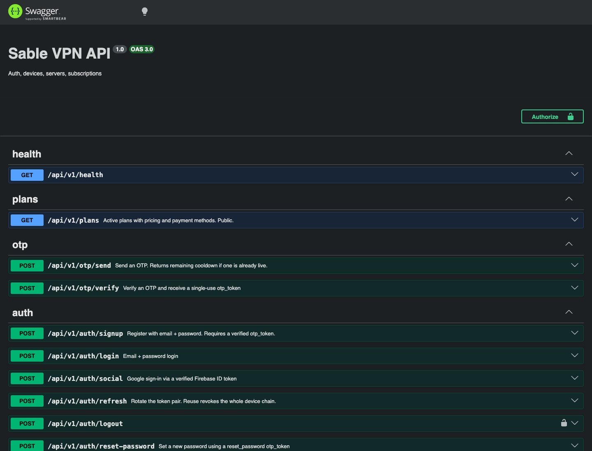
/api/docs after a successful first run.The first start creates every table and this default data:
| Data | Default |
|---|---|
| Plans | free (1 device, 60 minutes a day, ads), reward (earned with an ad), premium (for manual grants), premium_monthly and premium_yearly (5 devices, no limits, no ads). Edit prices, limits and texts in the admin panel |
| Store products | Example App Store and Google Play product IDs linked to the monthly and yearly plans. Replace them with your own (section 11) |
| Payment gateways | Google Play and App Store (through RevenueCat), active. bKash and Nagad rows exist but are switched off and not integrated |
| Sample location | Region Jakarta with server jkt01.your-domain.com (203.0.113.10, a documentation address). It is only an example: delete it, or edit it to match your real server (section 15) |
| Rewarded ads | Reward ladder 30, 50, 60, 90, 120 minutes, 5 rewards a day, and Google's test rewarded ad unit |
| App pages | Empty privacy policy and terms, and a short About page |
No app users are created. Sign in to the admin panel with ADMIN_EMAIL and your password once it is running (section 14).
cdn.your-domain.com) or enable its public r2.dev URL.CLOUDFLARE_R2_ENDPOINT (https://<account-id>.r2.cloudflarestorage.com), CLOUDFLARE_R2_ACCESS_KEY_ID, CLOUDFLARE_R2_SECRET_ACCESS_KEY, CLOUDFLARE_R2_BUCKET, CLOUDFLARE_R2_PUBLIC_URL (https) and optionally CLOUDFLARE_R2_PREFIX (a folder inside the bucket), then restart.R2 is used for images you upload in the admin panel: push notification images, region flags and pictures in app pages. PNG, JPEG, WebP and GIF up to 2 MB. Without R2 the upload button reports that uploads are not configured; you can still paste https image links instead.
The backend uses a Firebase service account to verify Google sign-in and to send push notifications. In the Firebase console open Project settings > Service accounts > Generate new private key, then either:
.env: base64 -i service-account.json | tr -d '\n' → FIREBASE_SERVICE_ACCOUNT_B64=..., then restart.The service account must belong to the same Firebase project as the app (section 4).
npm ci
npm run build
npm install -g pm2
pm2 start prod.config.js # app name "sable-api", NODE_ENV=production
pm2 save && pm2 startup # restart automatically after a rebootOr run bash scripts/deploy-production.sh, which checks for .env, builds, and starts or reloads sable-api. Keep one PM2 instance: the scheduled jobs (free-time limits, idle sessions, server health, push sending, subscription expiry and clean-up) run inside the process.
Put nginx in front with HTTPS (for example with Let's Encrypt / certbot):
server {
listen 80;
server_name api.your-domain.com;
client_max_body_size 10m;
location / {
proxy_pass http://127.0.0.1:3001;
proxy_set_header Host $host;
proxy_set_header X-Real-IP $remote_addr;
proxy_set_header X-Forwarded-For $proxy_add_x_forwarded_for;
proxy_set_header X-Forwarded-Proto $scheme;
}
}Then run sudo certbot --nginx -d api.your-domain.com and set TRUST_PROXY=loopback in .env. Release builds of the app only talk to HTTPS addresses.
| Problem | Fix |
|---|---|
| "Config validation error" at start | Read the list; it names every variable to fix (see the startup check above) |
ECONNREFUSED or "password authentication failed" | Check the DB_* values and that PostgreSQL is running and accepts connections |
| "database … does not exist" | Create it first (step 2), and check DB_NAME |
| "permission denied to create extension" | Run the CREATE EXTENSION lines from step 2 as a superuser |
EADDRINUSE (port already in use) | Another program uses the port. Change PORT in .env and in your nginx proxy_pass |
| Sign-up codes never arrive | Check the server log for "mail send failed". Fix the SMTP_* values; for testing set OTP_DEV_CODE=true in development |
| "No Firebase service account" warning | Normal until step 7. Google sign-in and push are off until then |
| Google sign-in returns 400 "Social sign-in is not available" | Firebase service account missing (step 7), or GOOGLE_SIGNIN_ENABLED=false |
| Image uploads fail | R2 is not configured or wrong (step 6). Images are limited to 2 MB |
| RevenueCat webhook gets 503 or 401 | 503: the webhook secret is not set. 401: the Authorization value in RevenueCat does not match exactly (section 11) |
| Admin login answers 429 | Too many failed attempts from your IP. Wait until the lockout window ends (15 minutes by default; the message says how long) |
Admin login answers 403 IP_NOT_ALLOWED | Your IP is not in ADMIN_IP_ALLOWLIST |
The admin panel lives in sable-admin/. It is a Next.js 16 web app (React 19, Tailwind 4) that talks to the backend. It needs Node.js 20.9 or newer (tested on 24).
cd sable-admin
npm ci
cp .env.example .env| Variable | What to set |
|---|---|
API_BASE_URL | Your backend address without /api/v1, e.g. http://localhost:3001 locally or https://api.your-domain.com in production. The panel adds /api/v1/admin/ itself |
NEXT_PUBLIC_APP_NAME | Name in the sidebar, sign-in page and browser tab (default Sable Admin). Run npm run build again after changing it |
SESSION_COOKIE_NAME | Name of the sign-in cookie (default sable_admin). No need to change it |
API_BASE_URL is read only by the panel's own server, never by the browser. The browser calls the panel, and the panel forwards each request to the backend with the admin token from an httpOnly cookie. So the backend does not need a CORS entry for the panel, and the token is never readable by page scripts.
npm run dev # http://localhost:5101Start the backend first. A successful start looks like this (real output):
http://localhost:5101.http://localhost:3001.next dev. They are not used by the panel; you can delete them or ignore them.Open http://localhost:5101. You should see the sign-in page:
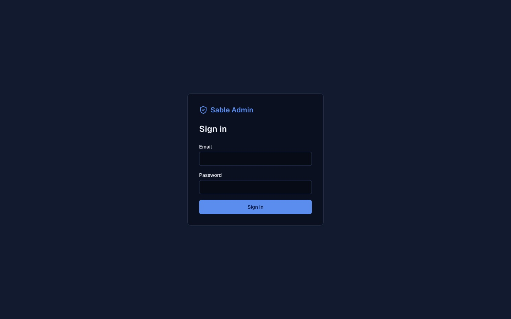
ADMIN_EMAIL and the password you hashed with npm run admin:hash.After signing in you land on the Dashboard. On a new installation most numbers are 0 until users connect. If sign-in fails with "Cannot reach the server", check that the backend is running and that API_BASE_URL is right.
npm ci
npm run build
pm2 start prod.config.js # app name "sable-admin", runs "next start" on port 5101
pm2 savePut nginx in front with HTTPS. HTTPS is required in production: the sign-in cookie is marked Secure, so the browser will not send it over plain HTTP.
server {
listen 80;
server_name admin.your-domain.com;
client_max_body_size 10m;
location / {
proxy_pass http://127.0.0.1:5101;
proxy_set_header Host $host;
proxy_set_header X-Forwarded-For $proxy_add_x_forwarded_for;
proxy_set_header X-Forwarded-Proto $scheme;
}
}Then run sudo certbot --nginx -d admin.your-domain.com. Vercel also works: import the sable-admin folder, set API_BASE_URL in the project settings and deploy. npm run build downloads the Geist fonts from Google Fonts, so the build machine needs internet access.
.env (ADMIN_EMAIL and ADMIN_PASSWORD_HASH). There are no staff roles; the admin can use every page.ADMIN_TOKEN_TTL_SEC in the backend). When it expires the panel returns you to the sign-in page with "Your session expired".ADMIN_IP_ALLOWLIST in the backend to allow the admin API only from your own IPs.| Page | What it does |
|---|---|
| Dashboard | Active users (24 h), sign-ups today, paid subscribers, estimated revenue, ad rewards today, bandwidth today, servers and stale servers, a trend chart and a server table. Refreshes every 30 seconds |
| Servers | Every VPN server with region, protocols, status, health, load, peers, traffic and last heartbeat. Search, filter and sort; Add server opens the setup wizard (section 15) |
| Server detail | Tabs for Overview (CPU, memory, load, peers, bandwidth), Protocols, IP pools, Sessions and Settings. Actions: Activate, Maintenance, Drain, Disable, Re-enable, Rotate agent token, Disconnect all and Delete |
| Regions | Locations shown in the app: code, name, country, city, map position, flag, access level (Free, Ads or Premium), order and active switch |
| Plans & billing > Plans | Price, currency, billing period, trial days, access level, daily time, data allowance, speed limit, devices at once, ads, features, and whether the plan is sold on the paywall. Apply to current holders pushes a changed limit to existing users |
| Store products | Google Play and App Store product IDs and which plan each one grants |
| Subscriptions / Payment events | Every subscription with filters, and every RevenueCat event with its result. A failed event can be replayed |
| Promo codes | Code, plan, duration, start and end dates, total and per-user limits, and redemptions |
| Rewarded ads | The ad reward log and the ad settings: rewards on or off, reward ladder, daily limits, cooldown, ad unit IDs, banner and interstitial switches |
| Users | Search and filter users. User detail shows devices, sessions, subscription, payments and ad rewards. Actions: grant or revoke Premium, send a password reset code, sign out everywhere or one device, suspend, delete. Users who asked to delete their account show as Deletion requested with the date it will be deleted (see Account deletion) |
| Support | Contact messages and problem reports sent from the app, with notes and resolved / open status |
| App config | Maintenance mode and feature switches (ads, social sign-in, promo codes); Announcements (banners in the app); Push notifications to everyone, a plan, a platform or one user, now or scheduled; Versions (latest and minimum version per platform, force update); Pages (privacy policy, terms, about, with a rich-text editor) |
| Audit log | Who changed what and when, with the values before and after |
| Settings | Integration keys: Firebase service account, RevenueCat webhook secret, RevenueCat sandbox switch, RevenueCat Android and iOS SDK keys, how long logs are kept, and the account deletion grace period. Secrets are write-only. The AdMob app ID and the Firebase files are built into the app and cannot be set here |
Screenshots from the demo, so you know your way around before you add your own servers. Server addresses are examples.
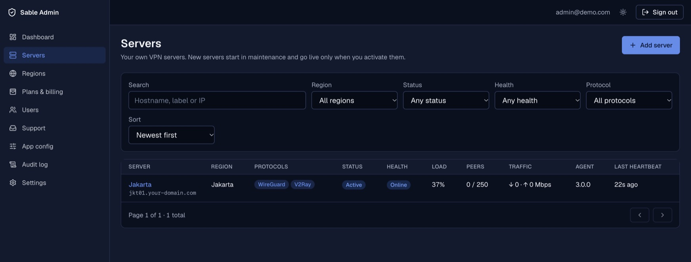
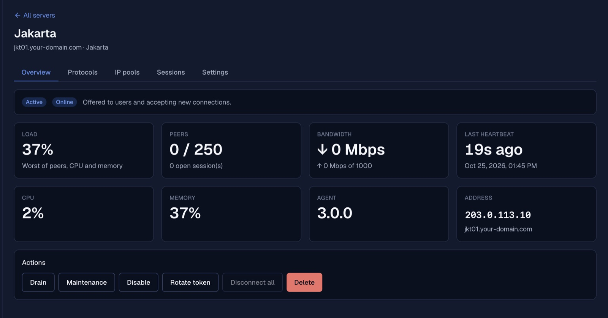
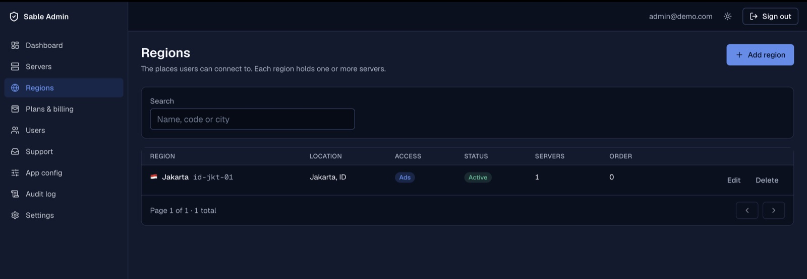
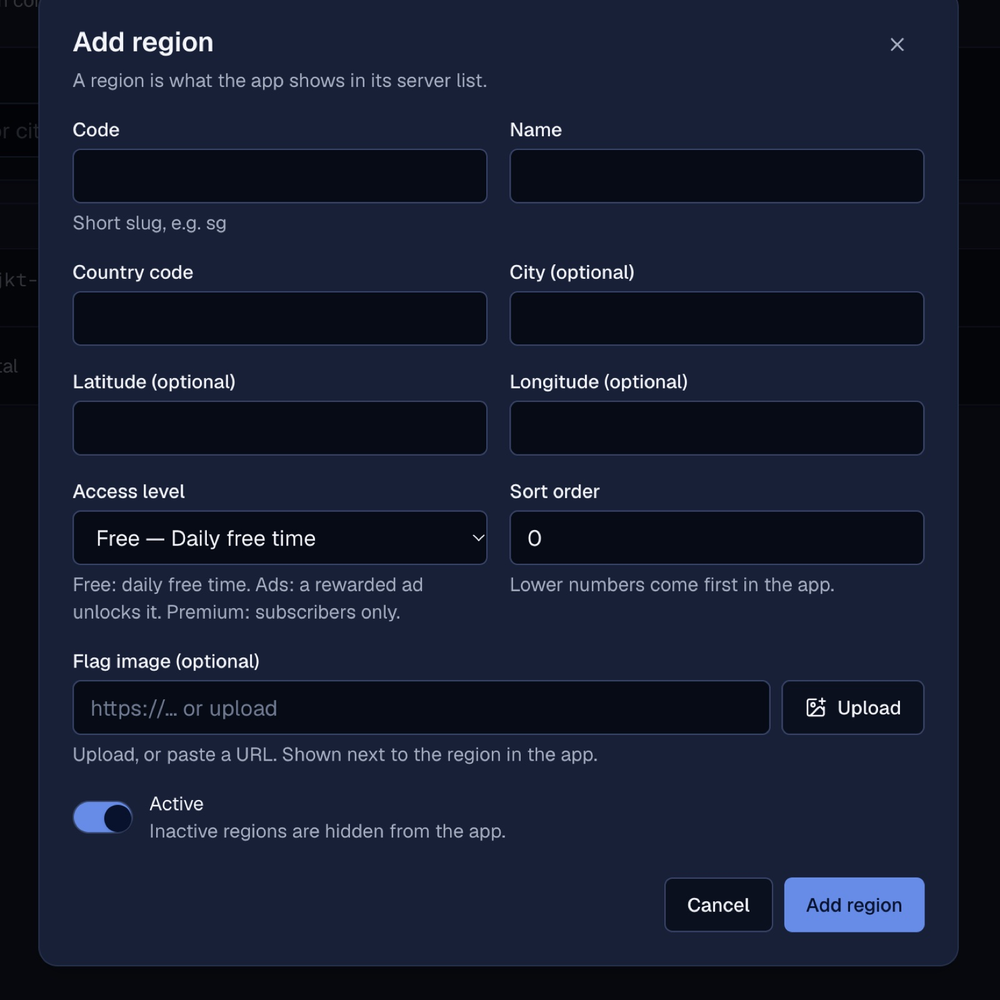
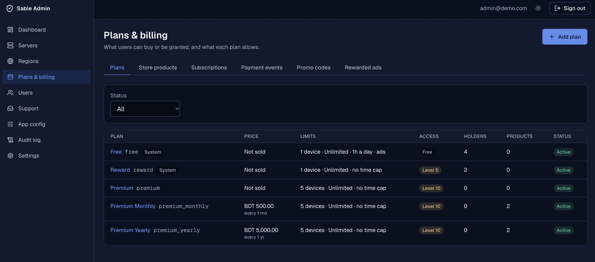
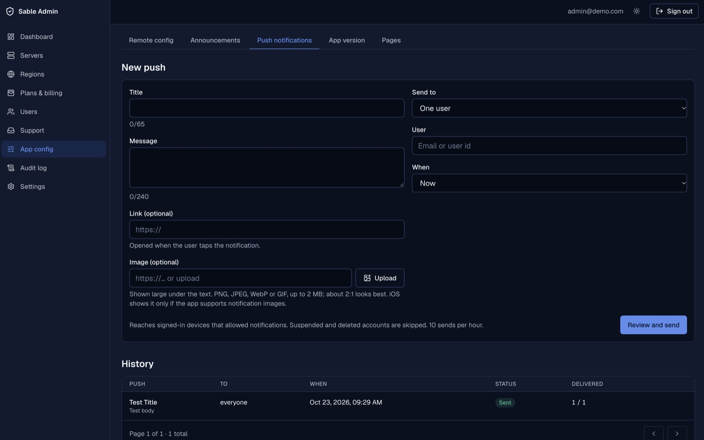
Apple and Google require that users can delete their account from inside the app. Sable does this in two steps, the common pattern for apps with paid plans: the account is blocked at once, then deleted automatically after a grace period, so a request made by mistake can still be cancelled.
| Deleted | Kept, without personal details |
|---|---|
Name, email, phone number and password; the user name becomes deleted-<id>@deleted.invalid | Subscriptions and payment events (needed for accounting and refunds) |
| Sign-in tokens and verification codes | Rewarded-ad events and daily usage totals |
| Support messages, including those sent signed out from the account's email | Audit log entries: the email is replaced with “deleted user”, and the IP address and deletion reason of the user's own request are cleared |
| Device model, OS version, language and push token; open VPN sessions end |
| What | Where |
|---|---|
| Name | NEXT_PUBLIC_APP_NAME in .env; the page description is in src/app/layout.tsx |
| Colours (light and dark) | src/app/globals.css: :root for light, .dark for dark. The primary colour is #16408c (light) and #5b8def (dark) |
| Logo icon | The shield icon in src/components/layout/sidebar.tsx and src/features/auth/login-form.tsx |
| Favicon | src/app/favicon.ico |
The panel is in English. Dates and numbers follow the browser's language.
| Problem | Fix |
|---|---|
| "Cannot reach the server" or 502 on every page | The backend is not running, or API_BASE_URL is wrong. It must not end in /api/v1 |
| "Invalid email or password" | Use the backend's ADMIN_EMAIL and the password you hashed. If you forgot it, run npm run admin:hash again in sable-backend, replace the line in .env and restart the backend |
| Sign-in works locally but not on the server (you stay on the sign-in page) | Use HTTPS. In production the cookie is only sent over HTTPS |
| "Your session expired" | Normal after one hour. Sign in again, or raise ADMIN_TOKEN_TTL_SEC in the backend |
| "Images can be at most 2 MB" or uploads fail | Use a smaller image, and check R2 in the backend (section 13, step 6) |
A changed NEXT_PUBLIC_APP_NAME has no effect | Run npm run build again and restart |
| Port 5101 is in use | Change -p 5101 in the dev and start scripts in package.json and in prod.config.js |
Your users' traffic flows through VPN servers that you rent and control. Each one runs WireGuard, optionally Xray for V2Ray (VMess over TLS), and the small Sable node agent, which keeps the server in sync with the backend. You add servers from the admin panel; one copy-and-paste command sets each one up.
| Requirement | |
|---|---|
| Operating system | Ubuntu 22.04 or 24.04, or Debian 12, with systemd. The installer refuses other systems |
| CPU and memory | x86_64 or ARM64, at least 1 GB RAM |
| Network | A public IPv4 address and outbound HTTPS to your API. Choose a plan with enough monthly bandwidth: every byte your users send and receive passes through this server |
| Access | Root (or sudo) over SSH |
| Firewall | Open UDP 51820 for WireGuard. For V2Ray also open TCP 443 and TCP 80 (80 is used to get the TLS certificate). Open them in your provider's cloud firewall too; the installer opens ufw itself when ufw is active |
| Domain (V2Ray only) | A hostname such as sg1.your-domain.com whose DNS A record points to the server's public IP, so a Let's Encrypt certificate can be issued |
In the admin panel open Regions and add the location: code (for example sg-sin-01), name, country code, city, map position, a flag image, the access level (Free, Ads or Premium) and the sort order. The first start of the backend created an example region, Jakarta, with a placeholder server; edit or delete them.
Open Servers > Add server. The wizard has five steps:
10.8.0.0/24 (gateway 10.8.0.1, DNS 1.1.1.1, 1.0.0.1) serves about 250 users at once; use 10.8.0.0/22 for more. This step is skipped when WireGuard is off.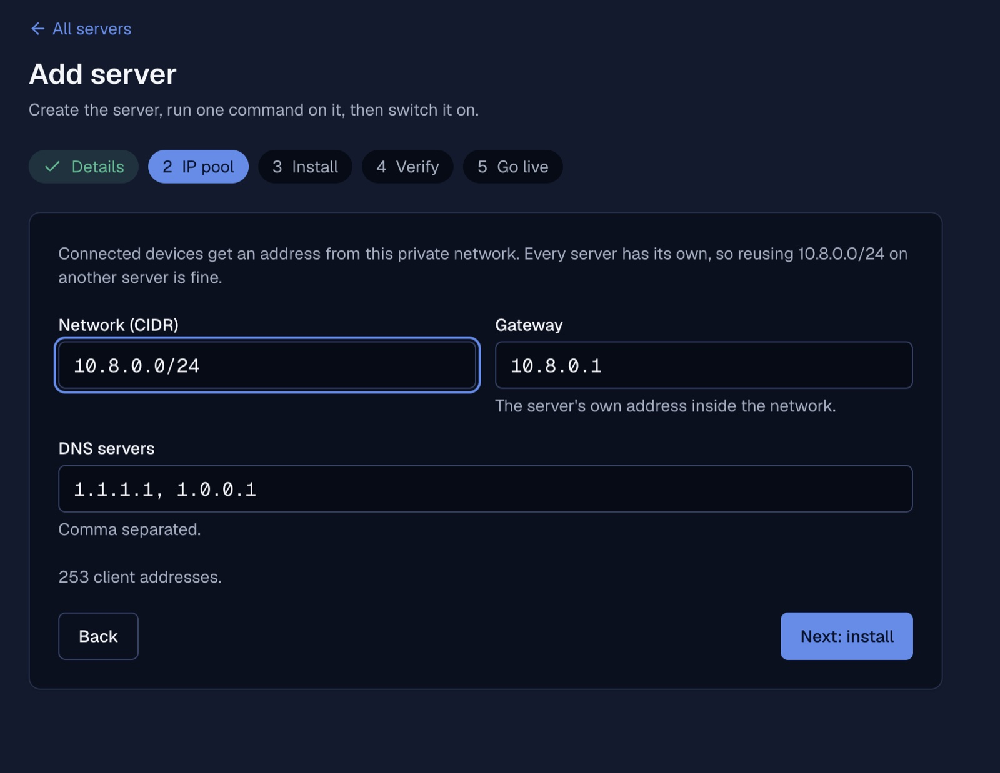
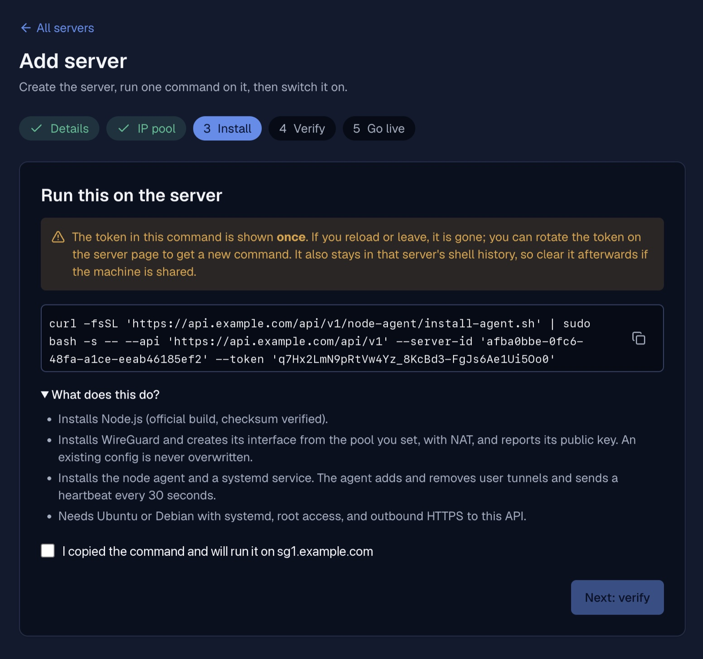
SSH into the new server and paste the command from the panel. It looks like this:
curl -fsSL 'https://api.your-domain.com/api/v1/node-agent/install-agent.sh' \
| sudo bash -s -- --api 'https://api.your-domain.com/api/v1' \
--server-id '<server id>' --token '<one-time token>'The script, in order:
curl, jq and a few basic tools;/etc/wireguard/wg0.conf with a new key and NAT, starts wg-quick@wg0 and registers the public key with the API;xray service, gets a Let's Encrypt certificate for the hostname, and blocks traffic to private addresses;/opt/vpn-node-agent, writes its settings to /opt/vpn-node-agent/.env (readable by root only) and starts the vpn-node-agent systemd service.It ends with "Agent is running". Back in the panel the Verify step turns green.
Options: --skip-wireguard (V2Ray only), --iface NAME (WireGuard interface name, default wg0), and --insecure-http (allows an http:// API address; only for testing on a private network).
systemctl status vpn-node-agent # should be active (running)
journalctl -u vpn-node-agent -n 30 --no-pager # no "401" or "failed" lines
wg show # WireGuard interface and peers
systemctl status xray # if V2Ray is enabled
certbot certificates # if V2Ray is enabled| Action (server page) | Effect |
|---|---|
| Maintenance | No new connections; current users stay connected |
| Drain | No new connections, so current users leave over time (before you remove a server) |
| Disable | Disconnects everyone and takes the server out of use |
| Re-enable | Moves a disabled server back to maintenance; click Activate when it is ready |
| Disconnect all | Ends every current session on the server |
| Rotate agent token | Issues a new install command and makes the old token useless. Run the new command on the server |
| Delete | Removes the server. Refused while users are connected; drain or disable it first |
To update the agent on a server later, run the update command (no arguments; it reads the existing settings):
curl -fsSL 'https://api.your-domain.com/api/v1/node-agent/install-agent.sh' | sudo bash| Problem | Fix |
|---|---|
| "Unsupported OS" | Use Ubuntu 22.04 / 24.04 or Debian 12 |
| Install stops with 401 | Wrong server ID or token, or the token was already rotated. Use Rotate agent token on the server page and run the new command |
| Install stops with 409 | The server is not ready in the panel yet; finish the wizard's Details step |
Install refuses an http:// API address | Put HTTPS on the API (section 13), and check PUBLIC_API_URL in the backend .env |
| Certificate fails (V2Ray) | The hostname's DNS must point to this server, and TCP port 80 must be open and free |
| Server shows "stale" or "never seen" | journalctl -u vpn-node-agent -n 50. Check outbound HTTPS to the API and that wg show works |
| App connects but no traffic passes | UDP 51820 (WireGuard) or TCP 443 (V2Ray) is blocked in the provider's firewall |
| App says the location is full | The IP pool or max_connections is used up. Use a bigger pool (/22) or add another server to the region |
All endpoints live under https://api.your-domain.com/api/v1. The full, always-current reference with every request body is the Swagger UI at /api/docs (when SWAGGER_ENABLED is on). This section covers the conventions and the most important calls. The JSON below was captured from a real server or built from the request classes in the code.
multipart/form-data with a field named file.THROTTLE_TTL_MS, THROTTLE_LIMIT), with tighter limits on sign-in, codes, connect and promo codes. Admin routes allow 60 per minute. Over the limit you get 429.auth/signup, auth/login and auth/social require X-Device-Id (a stable ID per install, up to 128 characters) and X-Platform (android, ios, windows, macos, linux or tv). Optional: X-Device-Model, X-OS-Version, X-App-Version, X-App-Build, X-Locale. Other routes take the device from the token.// success
{ "success": true, "data": { ... } }
// error (real response)
{ "success": false,
"error": { "code": "UNAUTHORIZED", "message": "Invalid credentials" },
"path": "/api/v1/auth/login", "timestamp": "2026-10-25T10:19:58.275Z" }
// validation error: message is a list (real response)
{ "success": false,
"error": { "code": "BAD_REQUEST", "message": ["user_name must be an email", "password must be a string"] },
"path": "/api/v1/auth/login", "timestamp": "2026-10-25T10:19:53.928Z" }The health check (GET /health) and the agent files (GET /node-agent/:name) are not wrapped. Some errors carry extra fields; for example DEVICE_LIMIT_EXCEEDED includes limit, devices and a device_manage_token the app uses to sign another device out.
Pagination (admin lists): ?page=1&limit=20 (maximum 100). The response data is { "items": [...], "page": 1, "limit": 20, "total": 57 }.
| Code | Meaning |
|---|---|
| 200 / 201 | Success |
| 400 | Invalid input (BAD_REQUEST, MISSING_DEVICE_HEADERS, UNSUPPORTED_PROVIDER) |
| 401 | Missing, invalid or expired token, or wrong credentials |
| 403 | Not allowed: REQUIRES_UPGRADE, REQUIRES_AD, ACCOUNT_DELETION_PENDING, IP_NOT_ALLOWED (admin) |
| 404 | Not found |
| 409 | Conflict: DEVICE_LIMIT_EXCEEDED, PASSWORD_NOT_SET, DUPLICATE |
| 422 | Request understood but refused, e.g. WRONG_PASSWORD, PROMO_DISABLED, UPLOADS_NOT_CONFIGURED |
| 429 | Too many requests |
| 500 | INTERNAL_ERROR; details are only in the server log |
| 503 | MAINTENANCE (maintenance mode is on), or a service that is not configured (for example the RevenueCat webhook) |
App users get a short-lived access token (15 minutes) and a refresh token (30 days). Send the access token on every user request:
Authorization: Bearer <access_token>Sign-up with an email code:
POST /api/v1/otp/send
{ "destination": "user@example.com", "purpose": "register" }
// real response
{ "success": true, "data": { "sent": true, "resend_in": 60, "resend_available_at": "2026-10-25T10:21:03.488Z",
"expires_in": 600, "expires_at": "2026-10-25T10:30:03.488Z", "attempts_left": 5 } }
POST /api/v1/otp/verify
{ "destination": "user@example.com", "purpose": "register", "code": "123456" }
// → data: { "otp_token": "...", "expires_in": 900, ... }
POST /api/v1/auth/signup (device headers required)
{ "otp_token": "...", "password": "Str0ng!Passw0rd", "full_name": "Demo User" }
// → 201, same body as login belowPassword reset uses the same two code calls with "purpose": "reset_password", then POST /auth/reset-password with { "otp_token", "new_password" }.
Login:
POST /api/v1/auth/login (device headers required)
{ "user_name": "user@example.com", "password": "Str0ng!Passw0rd" }
{ "success": true, "data": {
"access_token": "eyJ...", "refresh_token": "...", "expires_in": 900,
"expires_at": "2026-10-25T10:15:00.000Z", "refresh_expires_at": "2026-11-24T10:00:00.000Z",
"user": { "id": "uuid", "user_name": "user@example.com", "full_name": null,
"register_provider": "email", "has_password": true },
"device": { "device_id": "uuid", "login_provider": "email" },
"entitlement": { "plan_code": "free", "plan_name": "Free", "access_level": 0, "max_devices": 1,
"data_limit_bytes": null, "data_limit_period": "month", "speed_limit_mbps": null,
"session_limit_seconds": 3600, "shows_ads": true, "source": "free", "expires_at": null } } }Other auth calls: POST /auth/social with a Firebase ID token (Google), POST /auth/refresh with { "refresh_token" } (a reused refresh token signs that device out), POST /auth/logout, GET/PATCH /auth/me, POST /auth/change-password and POST /auth/delete-account.
Admins sign in separately; admin and user tokens are signed with different secrets and cannot replace each other:
POST /api/v1/admin/auth/login
{ "email": "admin@your-domain.com", "password": "your-admin-password" }
// real response
{ "success": true, "data": { "access_token": "eyJ...", "expires_at": "2026-10-25T11:18:39.285Z" } }POST /api/v1/connect (user token)
{ "region_code": "id-jkt-01", "protocol": "wireguard", "supported_protocols": ["wireguard", "v2ray"],
"credentials": { "wireguard": { "public_key": "<the app's WireGuard public key>" } },
"idempotency_key": "c0ffee-1" }
{ "success": true, "data": {
"session_id": "uuid", "protocol": "wireguard", "peer_ready": false,
"config": { "address": "10.8.0.2/32", "dns": ["1.1.1.1", "1.0.0.1"], "mtu": 1420,
"peer": { "public_key": "<server key>", "endpoint": "jkt01.your-domain.com:51820",
"allowed_ips": ["0.0.0.0/0", "::/0"], "persistent_keepalive": 25 } },
"session": { "started_at": "...", "expires_at": "...", "limit_seconds": 3600 },
"server_time": "..." } }Send "protocol": null to let the backend choose (Auto). For V2Ray, config is a VMess client configuration instead. peer_ready becomes true once the server's agent has applied the peer (within about 5 seconds). Errors include REQUIRES_UPGRADE and REQUIRES_AD (location needs Premium or an ad), DAILY_LIMIT_REACHED, DATA_LIMIT_REACHED, NO_SERVER_AVAILABLE, AT_CAPACITY and MAINTENANCE.
GET /api/v1/plans
// real response, shortened
{ "success": true, "data": [
{ "code": "premium_monthly", "name": "Premium Monthly", "access_level": 10, "max_devices": 5,
"shows_ads": false, "features": ["All server locations", "No ads", "5 devices", "Unlimited session time"],
"price": { "amount_minor": 50000, "currency": "BDT", "display": "৳500.00" },
"billing_period_days": 30, "is_recurring": true, "platforms": ["android", "ios"],
"payment_methods": [
{ "gateway_code": "revenuecat_android", "name": "Google Play", "payment_type": "sdk",
"product_id": "sable_primium_subscription:monthly-premium-base-pack",
"charge": { "amount_minor": 200, "currency": "USD", "display": "$2.00" } },
{ "gateway_code": "revenuecat_ios", "name": "App Store", "payment_type": "sdk",
"product_id": "com.sablevpn.app.premium.monthly",
"charge": { "amount_minor": 200, "currency": "USD", "display": "$2.00" } } ] } ] }The plan price and currency are what the paywall shows; the store charge comes from each store product. Change both in the admin panel to match your own store prices.
Every path below is relative to /api/v1. Access: public (no token), user (app token), admin (admin token, optional IP allowlist), node (a VPN server's agent token).
| Group | Method and path | Access |
|---|---|---|
| Health | GET /health | public |
| Email codes | POST /otp/sendPOST /otp/verify | public |
| Auth | POST /auth/signupPOST /auth/loginPOST /auth/socialPOST /auth/refreshPOST /auth/reset-password | public |
| Account | POST /auth/logoutGET /auth/mePATCH /auth/mePOST /auth/change-passwordPOST /auth/delete-account | user |
| Devices | GET /devicesPOST /devices/push-tokenDELETE /devices/:id | user |
| Catalogue | GET /plansGET /protocolsGET /regions | public |
| Servers and connect | GET /serversGET /servers/recommendedPOST /connectPOST /disconnectGET /sessions/current | user |
| Ads and promo | GET /ads/configPOST /ads/rewards/noncePOST /promo/redeem | user |
| App content | GET /app/configGET /app/announcementsGET /app/version-checkGET /app/pages/:keyGET /app/pages/:key/view | public |
| Support | POST /support/messages | public (token optional) |
| Webhooks | POST /webhooks/revenuecatGET /webhooks/admob-ssv | RevenueCat secret / Google signature |
| Node agent | GET /internal/nodes/:serverId/setupPOST /internal/nodes/:serverId/registerPOST /internal/nodes/:serverId/heartbeatGET /internal/nodes/:serverId/peersPOST /internal/nodes/:serverId/peers/report | node |
| Agent files | GET /node-agent/:name (install script, agent, unit file) | public |
| Admin: sign-in | POST /admin/auth/loginGET /admin/auth/me | public / admin |
| Admin: dashboard | GET /admin/stats/overviewGET /admin/stats/timeseries | admin |
| Admin: servers | GET, POST /admin/serversGET, PATCH, DELETE /admin/servers/:idPOST /admin/servers/:id/activate, /maintenance, /drain, /disable, /enable, /rotate-token, /disconnect-allGET /admin/servers/:id/status, /health, /sessionsPOST /admin/servers/:id/sessions/:sessionId/disconnectGET, POST /admin/servers/:id/pools, /protocolsPATCH, DELETE /admin/pools/:id, /admin/protocols/:id | admin |
| Admin: regions | GET, POST /admin/regionsGET, PATCH, DELETE /admin/regions/:id | admin |
| Admin: billing | GET, POST /admin/plans; GET, PATCH, DELETE /admin/plans/:idPOST /admin/plans/:id/activate, /deactivate, /apply-to-subscribersGET /admin/gatewaysGET, POST /admin/products; GET, PATCH, DELETE /admin/products/:idGET /admin/subscriptions, /admin/subscriptions/:idGET /admin/payment-events, /admin/payment-events/:id; POST /admin/payment-events/:id/replayGET, POST /admin/promo-codes; GET, PATCH, DELETE /admin/promo-codes/:id; GET /admin/promo-codes/:id/redemptionsGET /admin/ads/events | admin |
| Admin: users | GET /admin/users; GET, DELETE /admin/users/:idGET /admin/users/:id/devices, /sessions, /subscriptions, /payment-events, /ad-eventsPOST /admin/users/:id/suspend, /unsuspend, /cancel-deletion, /logout, /reset-password, /grant, /revoke-grantDELETE /admin/users/:id/devices/:deviceId | admin |
| Admin: app content | GET, POST /admin/announcements; GET, PATCH, DELETE /admin/announcements/:idGET /admin/app/pages; GET, PUT /admin/app/pages/:keyGET /admin/app/versions; PUT /admin/app/versions/:platform | admin |
| Admin: push | GET /admin/notifications, /admin/notifications/audience, /admin/notifications/:idPOST /admin/notifications/send (10 per hour)POST /admin/notifications/:id/cancel | admin |
| Admin: other | POST /admin/uploads?purpose=notification|region|pageGET /admin/auditGET, PUT /admin/settings; PUT, DELETE /admin/settings/:keyGET /admin/support/messages; GET, PATCH /admin/support/messages/:id | admin |
PostgreSQL 14 or newer, managed with TypeORM. The tables are created by the migrations in sable-backend/src/database/migrations/, which run when the server starts (DB_RUN_MIGRATIONS=true). sable-backend/database/schema.sql holds the same schema and default data if you prefer to create the database by hand.
timestamptz.citext, so they are compared without regard to case.jsonb (plan features, protocol settings, app settings, audit before/after).vpn_sessions is partitioned by month on started_at. The backend creates the next two months' partitions at start and every night at 02:00.citext, pg_trgm, pgcrypto, uuid-ossp.| Area | Tables |
|---|---|
| Accounts | users, devices, auth_refresh_tokens, verification_codes |
| Plans and billing | plans, user_entitlements, subscriptions, payment_gateways, gateway_products, plan_payment_methods, payment_events, promo_codes, promo_redemptions |
| Rewarded ads | ad_reward_nonces, ad_reward_events |
| Servers | regions, servers, server_protocols, server_health, ip_pools |
| VPN sessions | wireguard_peers (WireGuard peers and V2Ray users), vpn_sessions (and its monthly partitions), usage_daily |
| App content | app_settings, app_pages, app_versions, announcements, notifications, support_messages |
| System | audit_logs, migrations |
There is no admin table: the single admin account lives in the backend .env.
| Table | Important columns |
|---|---|
users | user_name (citext), register_provider, password_hash (argon2, never returned), email, full_name, status, country_code, last_seen_at, suspended_reason, deletion_requested_at, deleted_at |
devices | user_id, install_id, platform, model, os_version, app_version, locale, push_token, is_blocked, last_seen_at, revoked_at |
plans | code, name, access_level, max_devices, data_limit_bytes, data_limit_period, speed_limit_mbps, session_limit_seconds, shows_ads, features, price_minor, currency, discount_percent, billing_period_days, is_recurring, platforms, is_active, sort_order |
user_entitlements | One row per user with the limits in force now: plan_id, access_level, max_devices, limits, shows_ads, source, expires_at, subscription_id |
subscriptions | user_id, plan_id, gateway_id, store, environment, original_transaction_id, status, auto_renew, current_period_start, current_period_end, grace_period_end, cancelled_at, expired_at, refunded_at |
regions | code, name, country_code, city, latitude, longitude, flag_url, access_level, is_active, sort_order |
servers | region_id, hostname, ipv4, ipv6, provider, access_level, status, weight, max_connections, bandwidth_mbps, agent_token_hash, agent_version, label |
server_protocols | server_id, protocol, port, public_key, config, is_active |
server_health | active_peers, load_percent, CPU and memory, receive and send Mbps, is_reachable, last_heartbeat_at |
ip_pools | cidr, gateway_ip, dns_servers, first_ip, last_ip |
wireguard_peers | user_id, device_id, server_id, protocol, public_key, allocated_ipv4, applied_at, revoked_at, removed_at, last_handshake_at, bytes received and sent, expires_at |
vpn_sessions | user_id, device_id, server_id, protocol, assigned_ip, bytes_up, bytes_down, started_at, ended_at, duration_seconds, disconnect_reason |
ad_reward_events | transaction_id, user_id, device_id, ad_unit, reward_seconds, status, granted_until |
promo_codes | code, plan_id, duration_seconds, max_redemptions, per_user_limit, starts_at, expires_at, is_active, note |
app_settings | key, value (jsonb), is_public. Values set on the admin panel's Settings, Rewarded ads and App config pages |
audit_logs | actor, ip, action, target_type, target_id, summary, before, after |
| Enum | Values |
|---|---|
| Sign-in provider | email, phone, google, apple (email and google are used in this version) |
| Device platform | android, ios, windows, macos, linux, tv |
| User status | active, suspended, pending_deletion, deleted |
| Server status | active, maintenance, draining, disabled |
| VPN protocol | wireguard, v2ray (implemented); openvpn_udp, openvpn_tcp, ikev2, shadowsocks, trojan, hysteria (reserved) |
| Access level | 0 Free, 5 Ads, 10 Premium |
| Entitlement source | free, reward, subscription, promo, referral, manual |
| Subscription status | active, billing_issue, paused, expired, refunded |
| Disconnect reason | user_disconnect, idle_timeout, session_limit, quota_exceeded, entitlement_expired, device_revoked, server_shutdown, server_disabled, admin_disconnect, unknown |
| Code purpose | register, reset_password, change_contact (not used) |
| Notification status | scheduled, sending, sent, failed, cancelled |
| Announcement style / platform | info, warning, promo / all, android, ios |
| Support message | kind: contact, report_issue; status: open, resolved |
| App page | privacy_policy, terms_of_service, about_us |
npm run migration:show # list applied and pending migrations
npm run migration:run # apply pending migrations by hand
npm run migration:revert # undo the last migrationpg_dump -Fc -d sable -f sable-$(date +%F).dump # back up
pg_restore -d sable --clean sable-2026-01-15.dump # restoreSchedule a daily backup (for example with cron) and keep copies off the server. The backend deletes old session and log data after the number of days set on the admin panel's Settings page (30 by default).
flutter doctor and fix every item it reports.flutter clean then flutter pub get, and try again.| Error or problem | Fix |
|---|---|
| "Unsupported class file major version" / Gradle fails to start | Run Gradle with JDK 21: flutter config --jdk-dir "<Android Studio>/jbr" (Android Studio's bundled JDK) |
| "Your project's Gradle / Android Gradle Plugin / Kotlin version is lower than Flutter's minimum" | Use Flutter 3.47.6 as tested. On a newer Flutter, raise the versions in android/settings.gradle and android/gradle/wrapper/gradle-wrapper.properties to the values in the message |
| NDK not found | Install the NDK version named in the error from Android Studio's SDK Manager > SDK Tools > NDK (Side by side) |
| Connect does nothing on an Android emulator | Expected: the VPN core is built for ARM phones only. Use a real Android phone |
| Connect does nothing in the iOS Simulator | Expected: iOS VPN extensions do not run in the Simulator. Use a real iPhone |
| iOS: Connect fails right away, or "permission denied" for the VPN configuration | The App Group or tunnel bundle ID differs between the targets and the code (section 3), or Network Extensions / App Groups are missing from one target (section 12) |
| "No matching client found for package name" | google-services.json does not match applicationId. Run flutterfire configure again for your package name |
| Google sign-in fails on Android (error 10 / DEVELOPER_ERROR) | Add the SHA-1 and SHA-256 of the key you are running with (debug, upload or Play app signing) in Firebase |
| Google sign-in crashes on iOS | Replace YOUR_IOS_CLIENT_ID in Info.plist (section 5) |
| No Google button at all | Firebase is not configured yet (section 4); the app hides social sign-in without it |
| "Cannot reach the server" / every list is empty | Check AUTH_API_BASE_URL (section 8). Release builds need HTTPS. On a phone, localhost is the phone itself: use your computer's network IP in a debug build |
| Sign-up code never arrives | The backend cannot send email: check the SMTP_* values and the server log (section 13) |
| "Device limit reached" at sign-in | The plan allows only that many devices. Sign another device out from the dialog, or raise the plan's device limit in the admin panel |
| A location shows "Premium" or "Ad" | The location's access level is Premium or Ads. Change it on the admin panel's Regions page, or buy Premium / watch an ad |
| Connected, but no websites load | The VPN server's firewall blocks UDP 51820 (WireGuard) or TCP 443 (V2Ray), or the server is unhealthy. See section 15, Troubleshooting |
CocoaPods errors (pod install fails) | cd ios && pod repo update && pod install. If it still fails, delete ios/Pods and ios/Podfile.lock and run pod install again |
| iOS "No signing certificate" / "requires a development team" | Select your Team for both the Runner and VpnTunnel targets |
| Premium plans do not appear, or buying fails | RevenueCat keys missing (section 11), the store product IDs in the admin panel do not match the stores, the app is not installed from a Play testing track / TestFlight, or the user is not signed in |
| Purchased but still not Premium | The webhook is not reaching the backend. Check the RevenueCat webhook URL and Authorization header, and the admin panel's Payment events page |
| Watched an ad but no time was added | Server-side verification is not set on the AdMob ad unit (section 10), or the daily limit was reached. See the log on the Rewarded ads page |
| Ads show "Test Ad" | Expected in debug builds and with the default IDs. Set your own app IDs and ad units (section 10) |
| Push notifications do not arrive on iOS | Add the Push Notifications capability and upload an APNs key in Firebase (section 5). Test on a real device |
See the troubleshooting tables in section 13, section 14 and section 15.
| Question | Answer |
|---|---|
| Are VPN servers included? | No. You rent your own servers from any provider and add them in the admin panel; one command sets each one up (section 15). |
| How many users can one server handle? | It depends mostly on its network speed and bandwidth allowance. By default each server accepts 250 connections and each IP pool gives out about 250 addresses; raise both for bigger servers. |
| Which protocols are supported? | WireGuard and V2Ray (VMess over TLS), plus Auto. V2Ray is offered only on plans without a speed limit, because speed limits are applied to WireGuard. |
| Can I sell Premium on both Android and iOS? | Yes, through Google Play and the App Store via RevenueCat (section 11). |
| Can I add another payment gateway? | Yes, as custom development. Plans, gateways and products are separate tables, so a new gateway needs a checkout and a webhook that grants the plan. |
| Does the app work without Firebase? | Yes. Email sign-in, connecting, ads and Premium work; Google sign-in, push, Analytics and Crashlytics are off. |
| Can I host the backend and admin panel on one server? | Yes. Use two nginx server blocks (for example api. and admin. subdomains). Keep VPN servers separate. |
What is lib/main.demo.dart? | A developer preview entry point (flutter run -t lib/main.demo.dart) that skips Firebase and fakes the signed-in session. It still needs a running backend for servers and plans. Use the normal lib/main.dart for real builds. |
| Are any files minified or obfuscated? | No. All three projects ship as readable source code. The only pre-built binaries are the VPN core libraries in packages/flutter_vpncore/android/libs/ and ios/Frameworks/. |
Questions before or after purchase? Please use the Support tab on the CodeCanyon item page. All support is handled through the official Envato item support system.
Support covers bugs and questions about the included features. Customisation, and installation on your own servers, are not part of item support.
A complete first message lets us answer in one reply instead of several:
| Information | How to get it |
|---|---|
| Your purchase code | CodeCanyon > Downloads > Sable > License certificate and purchase code |
| Which part | Flutter app, backend, admin panel or a VPN server, and the documentation section you were following |
| Platform and versions | Android or iOS and the device model; your computer's OS; for the app the output of flutter doctor -v; for the server the output of node -v and psql --version and the server's OS; for a VPN server the output of lsb_release -a |
| The exact error message | Copy and paste the text, not a summary. A screenshot of the full screen or terminal helps too |
| Log output | App: the red error lines from flutter run, or the in-app debug logs. Backend: pm2 logs sable-api --lines 100. Admin panel: pm2 logs sable-admin --lines 100 and the browser console (F12 > Console). VPN server: journalctl -u vpn-node-agent -n 100 |
| Steps to reproduce | What you did, what you expected, and what happened instead |
JWT_ACCESS_SECRET, ADMIN_JWT_SECRET, agent tokens, service-account JSON, API keys and keystore passwords from anything you paste. We will never ask for them.
When a new version of Sable is released, download it from your CodeCanyon Downloads page and read its changelog first. Your users, servers, plans, subscriptions and settings live in your PostgreSQL database, not in the code, so updating the code does not delete them.
pg_dump -Fc -d sable -f sable-before-upgrade.dump| Project | Keep your copy of |
|---|---|
| Backend | .env, and prod.config.js if you changed the PM2 name or memory limit |
| Admin panel | .env, and prod.config.js or the port in package.json if you changed them |
| Flutter app | lib/firebase_options.dart, android/app/google-services.json, ios/Runner/GoogleService-Info.plist, android/key.properties and your keystore, secrets.json, lib/core/config/auth_api_config.dart, lib/core/config/admob_config.dart, ios/Flutter/*.xcconfig, ios/Runner/Info.plist, your bundle IDs and App Group (section 3), your icons and assets/brand/, and lib/design/tokens/sable_colors.dart |
.env.example files with your .env files and add any new variables.If you edited source files (not only settings), do not copy the new version straight over them. The safest way is Git:
# one time, before your first customisation
cd sable-backend # or sable-admin, or sable-vpn
git init && git add -A && git commit -m "Sable 1.0.0 original"
# ...make your changes and commit them as usual...
# when a new version arrives
git checkout -b upgrade
# copy the new package files over the folder (keep the files listed above)
git add -A && git commit -m "Sable 1.x.x original"
git checkout main && git merge upgrade # Git combines both; fix any conflicts it listsWithout Git, compare your old folder and the new one with a diff tool (VS Code: right-click two files > Compare Selected) and re-apply your edits to the new files.
cd sable-backend
# copy the new files over your old folder, keeping your .env
npm ci
npm run build
pm2 reload sable-apiDB_RUN_MIGRATIONS=true the server runs every new migration when it starts. Each migration runs once and is recorded in the migrations table.npm run migration:show. If something goes wrong, npm run migration:revert undoes the last migration, or restore the backup with pg_restore -d sable --clean sable-before-upgrade.dump and go back to the old code.npm run migration:generate).If the changelog mentions the node agent, run the update command on each VPN server (section 15). It keeps the server's settings and token.
cd sable-admin
# copy the new files over your old folder, keeping .env
npm ci
npm run build
pm2 restart sable-adminThe admin panel stores nothing itself; all data comes from the backend. Upgrade the backend first.
lib/, packages/, assets/ and pubspec.yaml over your project, then restore the files you customised (list above). If you use Git, commit first and review the diff.flutter clean
flutter pub get
cd ios && pod install && cd ..
flutter runversion: in pubspec.yaml (for example 1.0.1+2) and publish the update as in section 12.| Component | Where | Licence |
|---|---|---|
| libbox (sing-box) | packages/flutter_vpncore/android/libs/libbox.aar, ios/Frameworks/Libbox.xcframework. Rebuild with tool/build_libbox.sh; versions in packages/flutter_vpncore/CORE_VERSION.md | GPL-3.0-or-later, plus a term forbidding use of the sing-box name for a derived product |
| Code adapted from sing-box-for-android | Android VPN service in packages/flutter_vpncore/android/ | GPL-3.0-or-later |
| Code adapted from sing-box-for-apple | iOS tunnel extension in ios/VpnTunnel/ | GPL-3.0-or-later |
| Code from shadowsocks-android | DefaultNetworkListener.kt | GPL-3.0-or-later |
Each adapted file carries a header naming its source. The full notices are in sable-vpn/NOTICE and the licence text in sable-vpn/LICENSE-GPL-3.0.
Because the app links this core, the Flutter app (sable-vpn/) is licensed under GPL-3.0-or-later (see sable-vpn/LICENSE.md). You may use, change and publish it, commercially too. When you distribute it (for example on Google Play or the App Store) you must:
support@example.com with your own address. You may reword the page, but keep the notice and the way to get the source.The backend and the admin panel do not include sing-box; they are licensed under the Envato Market licence you purchased, which adds no restriction to the app's GPL-3.0 rights. This section is a summary, not legal advice; if you are unsure, ask a lawyer before you publish.
The app, backend and admin panel install their other libraries from pubspec.yaml and package.json; each keeps its own licence (mostly MIT, BSD and Apache 2.0).
The VPN servers use WireGuard and Xray-core, which the install script downloads from their official sources onto your server; they are not part of the package.
The sable silhouette used in the logo is by Margot Michaud, published under CC0 (public domain) on PhyloPic.
AI tools were used to help create parts of this item:
All of it was reviewed, tested and finished by the author.
The item has no AI features: the app, the backend and the admin panel do not use or call any AI service or model.
5. Social Sign-In and Push Notifications
Google
cd android && ./gradlew signingReport. Without them sign-in fails with error 10. Downloadgoogle-services.jsonagain afterwards.ios/Runner/Info.plist, replaceYOUR_IOS_CLIENT_IDin two places with the iOS client ID fromGoogleService-Info.plist: theGIDClientIDvalue (<id>.apps.googleusercontent.com) and the URL schemecom.googleusercontent.apps.<id>(theREVERSED_CLIENT_ID).Apple
lib/data/auth/firebase_social_identity.dartfor a future update. Email and Google sign-in are not affected.Apple's App Review Guideline 4.8 asks apps that offer a third-party sign-in such as Google to also offer an equivalent private sign-in option. Email and password sign-in is available in Sable; check the current guideline before you submit and be ready to explain your sign-in options to App Review.
Push notifications
google-services.jsonis in place and the backend has the service account. Notifications use the channelhigh_priority_channel.Info.plist). Create an APNs key in your Apple Developer account and upload it in Firebase: Project settings > Cloud Messaging > Apple app configuration.